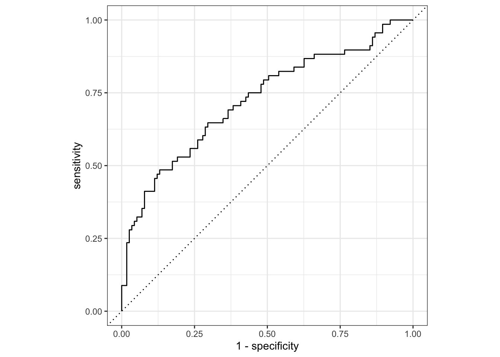
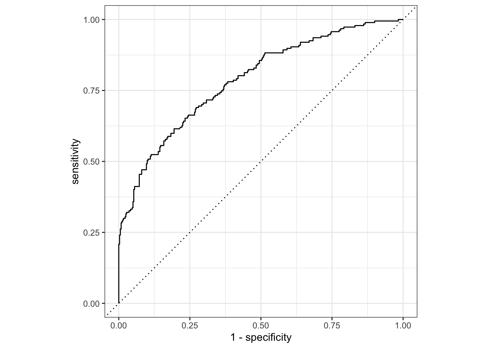
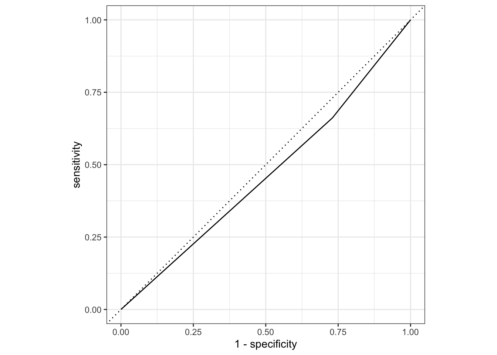
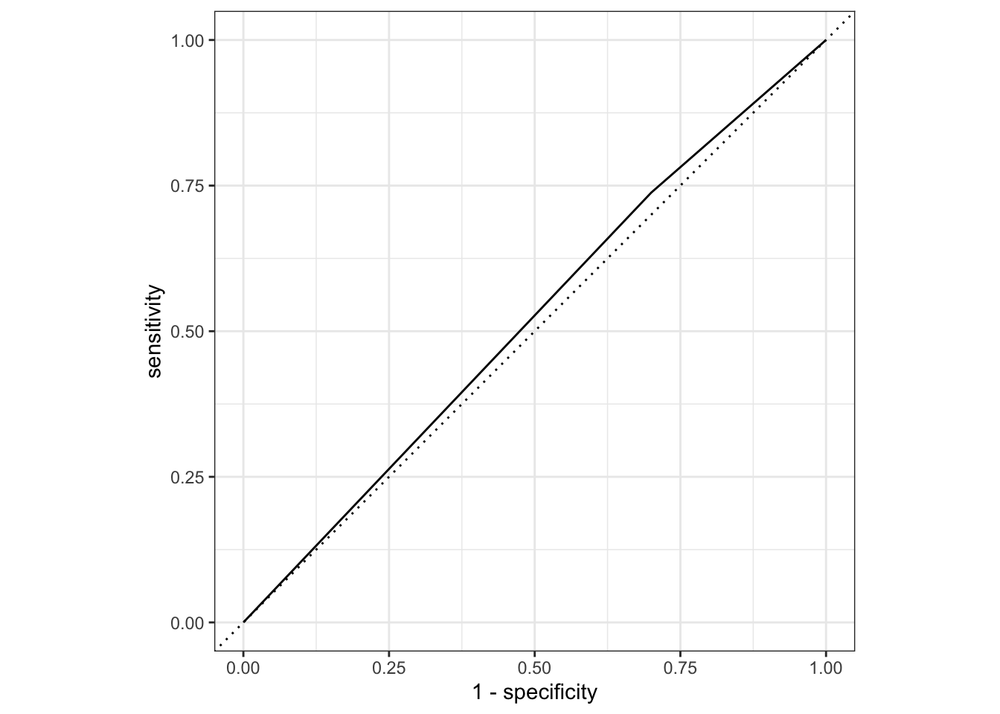

#Load data
#set seed for random numbers
#put 3/4 of data into the training set
#Create a simple recipe that fits categorical outcome of interest (Nausea) to all predictors.
#path for logistic regression model
#create workflow, add model type and the recipe
#model fitting to training data
#how it looks
## # A tibble: 38 × 5
## term estimate std.error statistic p.value
## <chr> <dbl> <dbl> <dbl> <dbl>
## 1 (Intercept) 1.63 9.40 0.173 0.862
## 2 SwollenLymphNodesYes -0.241 0.232 -1.04 0.298
## 3 ChestCongestionYes 0.219 0.257 0.853 0.394
## 4 ChillsSweatsYes 0.115 0.332 0.346 0.729
## 5 NasalCongestionYes 0.560 0.311 1.80 0.0713
## 6 CoughYNYes -0.705 0.611 -1.15 0.249
## 7 SneezeYes 0.117 0.248 0.473 0.636
## 8 FatigueYes 0.177 0.438 0.403 0.687
## 9 SubjectiveFeverYes 0.229 0.264 0.868 0.385
## 10 HeadacheYes 0.435 0.352 1.24 0.216
## # … with 28 more rows#applying oit to make some predictions on test data
## Warning in predict.lm(object, newdata, se.fit, scale = 1, type = if (type == :
## prediction from a rank-deficient fit may be misleading## # A tibble: 183 × 1
## .pred_class
## <fct>
## 1 No
## 2 No
## 3 No
## 4 No
## 5 No
## 6 Yes
## 7 Yes
## 8 No
## 9 No
## 10 Yes
## # … with 173 more rows#more prediction using augment.
## Warning in predict.lm(object, newdata, se.fit, scale = 1, type = if (type == :
## prediction from a rank-deficient fit may be misleading
## Warning in predict.lm(object, newdata, se.fit, scale = 1, type = if (type == :
## prediction from a rank-deficient fit may be misleading#evaluate ROC and ROC_auc to see how good it fits the data
Nausea_augment_predict %>%
roc_curve(truth = Nausea, .pred_Yes, event_level = "second") %>%
autoplot()
## # A tibble: 1 × 3
## .metric .estimator .estimate
## <chr> <chr> <dbl>
## 1 roc_auc binary 0.724#roc_auc value is 0.72, which is good.
#predict, augment, ROC-curve, roc_auc for the training data this time
## Warning in predict.lm(object, newdata, se.fit, scale = 1, type = if (type == :
## prediction from a rank-deficient fit may be misleading## # A tibble: 547 × 1
## .pred_class
## <fct>
## 1 No
## 2 Yes
## 3 No
## 4 No
## 5 Yes
## 6 No
## 7 No
## 8 No
## 9 No
## 10 No
## # … with 537 more rows## Warning in predict.lm(object, newdata, se.fit, scale = 1, type = if (type == :
## prediction from a rank-deficient fit may be misleading
## Warning in predict.lm(object, newdata, se.fit, scale = 1, type = if (type == :
## prediction from a rank-deficient fit may be misleadingNausea_augment_predict1 %>%
roc_curve(truth = Nausea, .pred_Yes, event_level = "second") %>%
autoplot()
## # A tibble: 1 × 3
## .metric .estimator .estimate
## <chr> <chr> <dbl>
## 1 roc_auc binary 0.787#roc_auc value is 0.78, which is good.
#Alternative model using just the main predictor: runny nose. Making recipe
#creating workflow with the alternative recipe
#fit it to training data
#see how it looks
## # A tibble: 2 × 5
## term estimate std.error statistic p.value
## <chr> <dbl> <dbl> <dbl> <dbl>
## 1 (Intercept) -0.790 0.172 -4.59 0.00000447
## 2 RunnyNoseYes 0.188 0.202 0.930 0.352#prediction from test data
## # A tibble: 183 × 1
## .pred_class
## <fct>
## 1 No
## 2 No
## 3 No
## 4 No
## 5 No
## 6 No
## 7 No
## 8 No
## 9 No
## 10 No
## # … with 173 more rows#prediction + augment from test data
#roc_curve and roc_auc from test data
Nausea_augment_predict3 %>%
roc_curve(truth = Nausea, .pred_Yes, event_level = "second") %>%
autoplot()
## # A tibble: 1 × 3
## .metric .estimator .estimate
## <chr> <chr> <dbl>
## 1 roc_auc binary 0.466#now predict, predict+augment, roc_curve and roc_Auc for the test data
## # A tibble: 547 × 1
## .pred_class
## <fct>
## 1 No
## 2 No
## 3 No
## 4 No
## 5 No
## 6 No
## 7 No
## 8 No
## 9 No
## 10 No
## # … with 537 more rowsNausea_augment_predict4 %>%
roc_curve(truth = Nausea, .pred_Yes, event_level = "second") %>%
autoplot()
## # A tibble: 1 × 3
## .metric .estimator .estimate
## <chr> <chr> <dbl>
## 1 roc_auc binary 0.519#roc-auc value for both test and training data set using the alternative model is below 0.5. So this alternative model is not a good fit.
<<<<<<< HEAD
======= # ###################### Below is where Zhihan’s part starts ###################
master
all_prdtr_rec <- recipe(BodyTemp ~ ., data = training_data)
single_prdtr_rec <- recipe(BodyTemp ~ RunnyNose, data = training_data)
lm_mod <- linear_reg() %>% set_engine("lm")#creating workflow
#model fitting to training data
#applying oit to make some predictions on test data
## Warning in predict.lm(object = object$fit, newdata = new_data, type =
## "response"): prediction from a rank-deficient fit may be misleading## # A tibble: 183 × 1
## .pred
## <dbl>
## 1 99.3
## 2 99.0
## 3 99.7
## 4 98.7
## 5 99.0
## 6 99.5
## 7 99.3
## 8 98.9
## 9 99.6
## 10 98.8
## # … with 173 more rows#more prediction using augment.
## Warning in predict.lm(object = object$fit, newdata = new_data, type =
## "response"): prediction from a rank-deficient fit may be misleading## # A tibble: 183 × 2
## BodyTemp .pred
## <dbl> <dbl>
## 1 98.3 99.3
## 2 98.8 99.0
## 3 102. 99.7
## 4 98.2 98.7
## 5 97.8 99.0
## 6 97.8 99.5
## 7 100 99.3
## 8 101. 98.9
## 9 98.8 99.6
## 10 100. 98.8
## # … with 173 more rows#evaluate rmse to see how good it fits the data
## # A tibble: 1 × 3
## .metric .estimator .estimate
## <chr> <chr> <dbl>
## 1 rmse standard 1.15#creating workflow
#model fitting to training data
#applying oit to make some predictions on test data
## # A tibble: 183 × 1
## .pred
## <dbl>
## 1 99.1
## 2 98.9
## 3 98.9
## 4 98.9
## 5 99.1
## 6 99.1
## 7 98.9
## 8 99.1
## 9 99.1
## 10 99.1
## # … with 173 more rows#more prediction using augment.
## # A tibble: 183 × 2
## BodyTemp .pred
## <dbl> <dbl>
## 1 98.3 99.1
## 2 98.8 98.9
## 3 102. 98.9
## 4 98.2 98.9
## 5 97.8 99.1
## 6 97.8 99.1
## 7 100 98.9
## 8 101. 99.1
## 9 98.8 99.1
## 10 100. 99.1
## # … with 173 more rows#evaluate rmse to see how good it fits the data
## # A tibble: 1 × 3
## .metric .estimator .estimate
## <chr> <chr> <dbl>
## 1 rmse standard 1.13